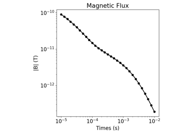
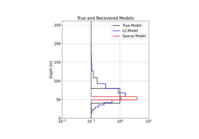

Time-Domain Electromagnetics#

1D Forward Simulation for a Single Sounding
1D Forward Simulation for a Single Sounding

1D Forward Simulation with Chargeable and/or Magnetic Viscosity
1D Forward Simulation with Chargeable and/or Magnetic Viscosity


3D Forward Simulation for Transient Response on a Cylindrical Mesh
3D Forward Simulation for Transient Response on a Cylindrical Mesh


1D Inversion of Time-Domain Data for a Single Sounding
1D Inversion of Time-Domain Data for a Single Sounding